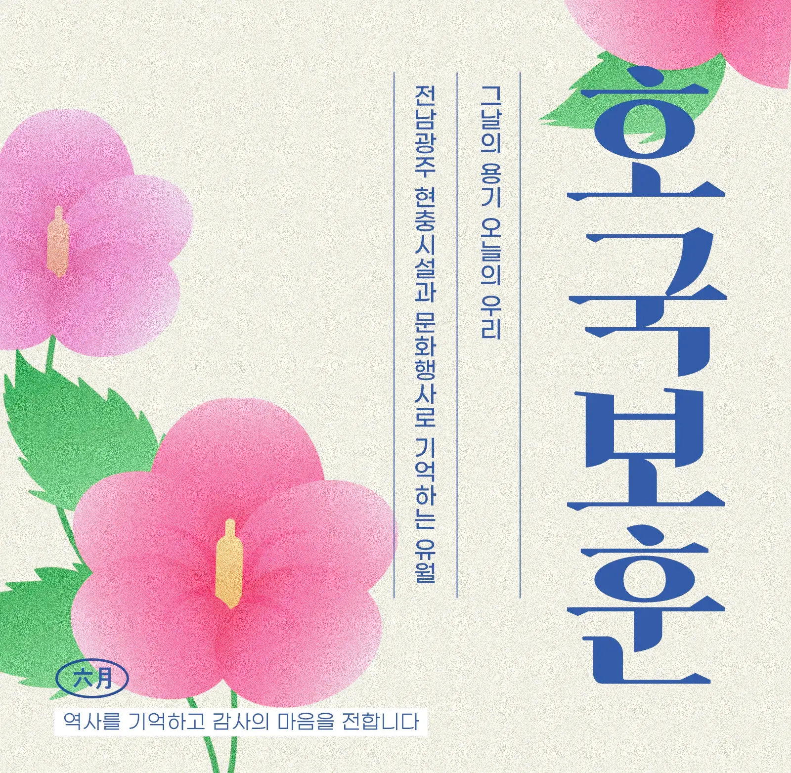
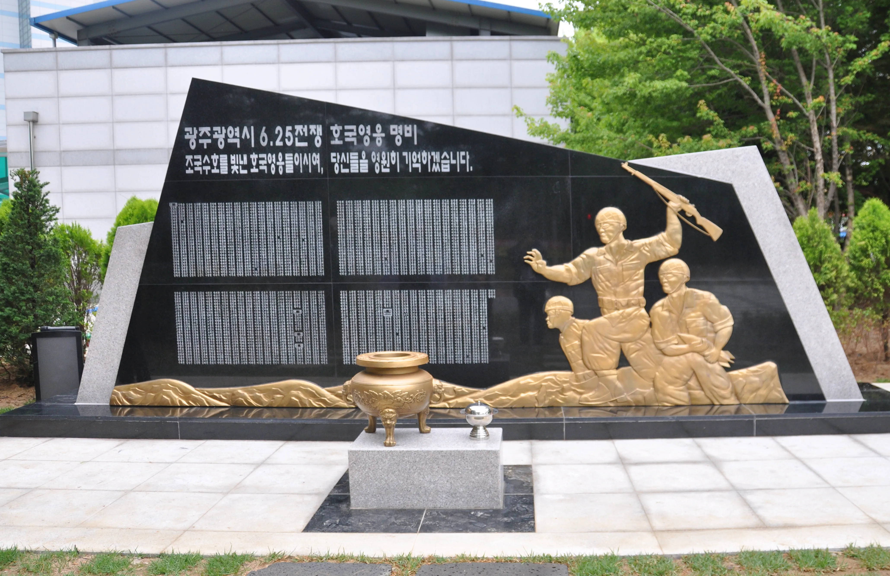
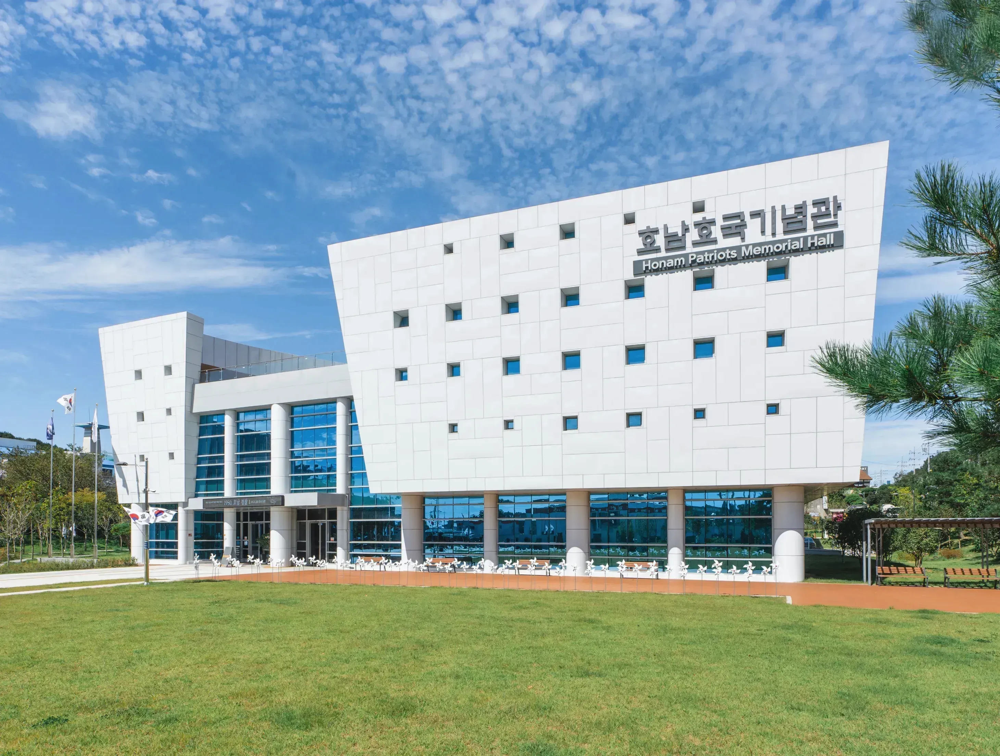
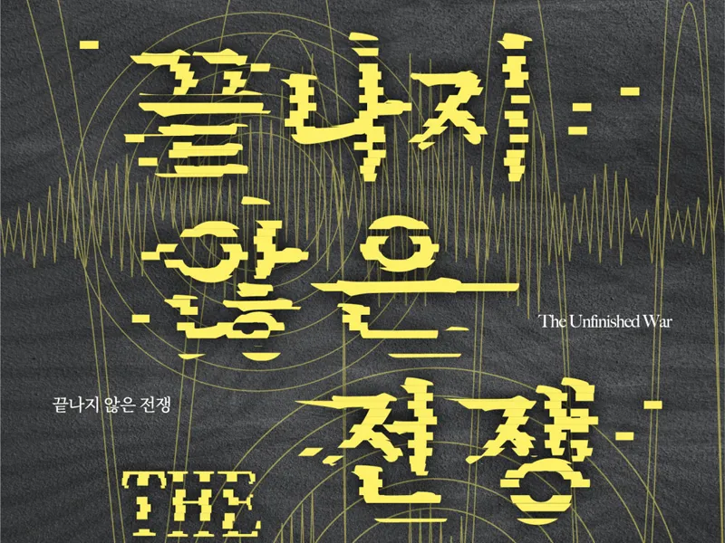
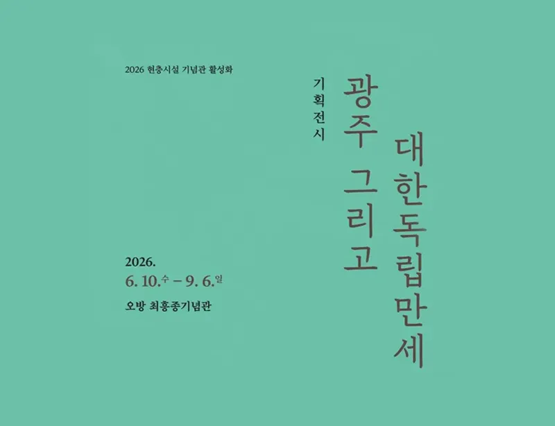
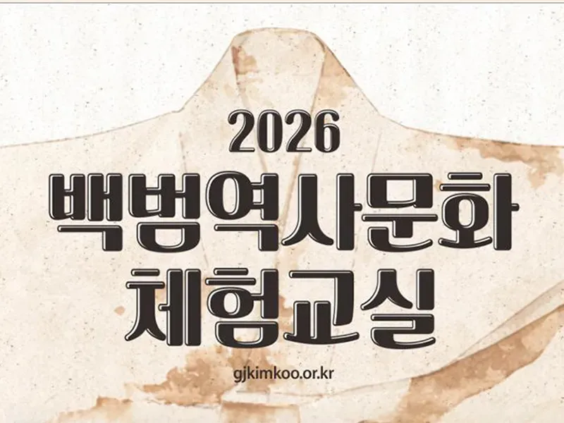
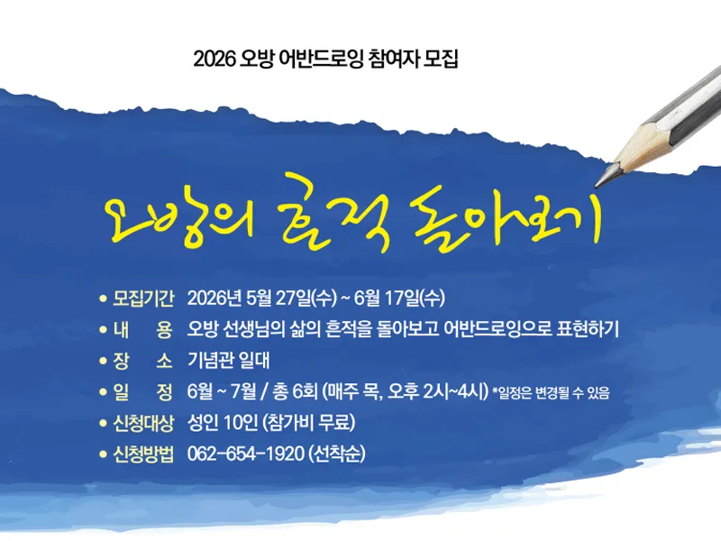

산동교
광주광역시 북구 동림동 115-1
1950년 7월 23일, 무기가 부족했던 군경 혼성부대가 북한군 전차 부대와 치열한 전투를 벌여 적의 남하를 지연시킨 곳.

헌신을 기리다
6월이 호국보훈의 달로 지정된 근본적인 이유는 1950년 6월 25일 발발한 6·25 전쟁 때문이라고 할 수 있어요.
의병의 날부터 현충일, 6·25전쟁 발발일, 제2연평해전과 독립운동 등 국가 수호를 위해 희생한 분들을 추모하기 위해 6월 한 달을 ‘호국보훈의 달’로 정하고, 추모·감사·화합의 기간을 보내며 나라를 지킨 분들의 공훈을 기억하고 감사하는 시간을 갖고 있어요.
모두크루 안규선님이 취재한 제71회 현충일 추념식 보기독립과 호국에 관련된 현충시설이 무려—
그만큼 전남광주통합특별시가 역사적 무게감이 큰 장소이며, 헌신한 이들을 잊지 않고 있다는 의미가 아닐까 싶은데요. 6월 호국보훈의 달에 방문하기 좋은 현충시설을 소개할게요.
현충시설 1
광주광역시 북구 동림동 115-1
1950년 7월 23일, 무기가 부족했던 군경 혼성부대가 북한군 전차 부대와 치열한 전투를 벌여 적의 남하를 지연시킨 곳.
곡성군 죽곡면 원달리 20-1
경찰과 학도병들이 압록교 전투 이후 퇴각하는 북한군과 맞서 싸웠던 장소로, ‘태안사 경찰충혼탑’을 세워 의미를 기리는 중.

현충시설 2
광주광역시 광산구 첨단월봉로 99
광주광역시 출신 6·25전쟁 전사자 1,891명을 명비에 각자(刻字)하여 그들의 넋과 얼을 기리는 곳.

함평군 함평읍 중앙길 140-18
6·25전쟁과 베트남전쟁에 참전한 유공자와, 공훈을 세워 국가로부터 훈장을 수여받은 이 고장 출신 무공수훈자의 공적을 기리는 곳.

현충시설 3
순천시 원연향길 17
6·25전쟁사를 주제로, 호국영웅들의 희생과 공훈을 기리는 호남의 유일한 호국기념관.

나주시 죽림길 26
1929년 학생독립운동을 이끌었던 학생들의 투쟁 의지를 기념하는 기념관.
문화로 되새기다

광주, 그리고 대한독립만세
자세히 보기


내가 보는 대한독립만세
광주의 독립운동을 정확히 이해하고 샌드아트로 재해석하는 체험 강좌.